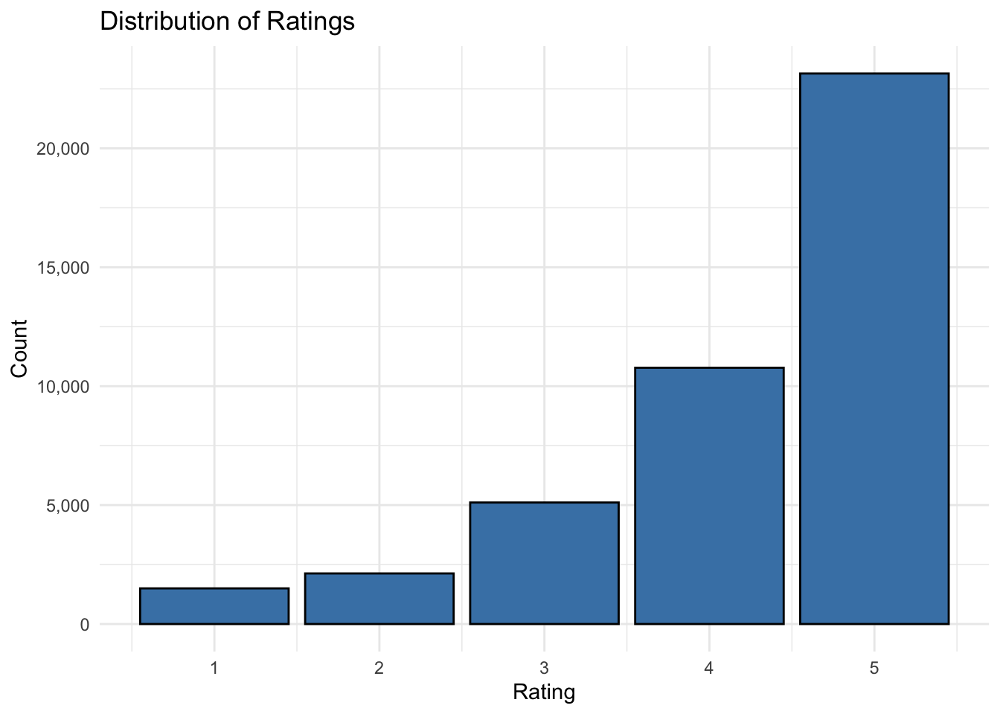
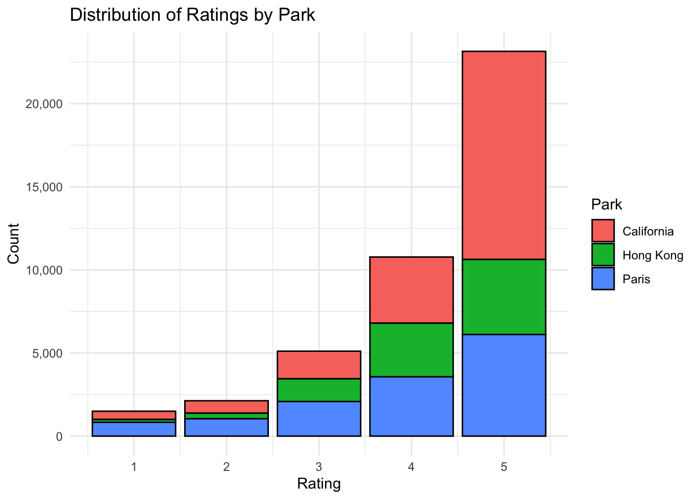
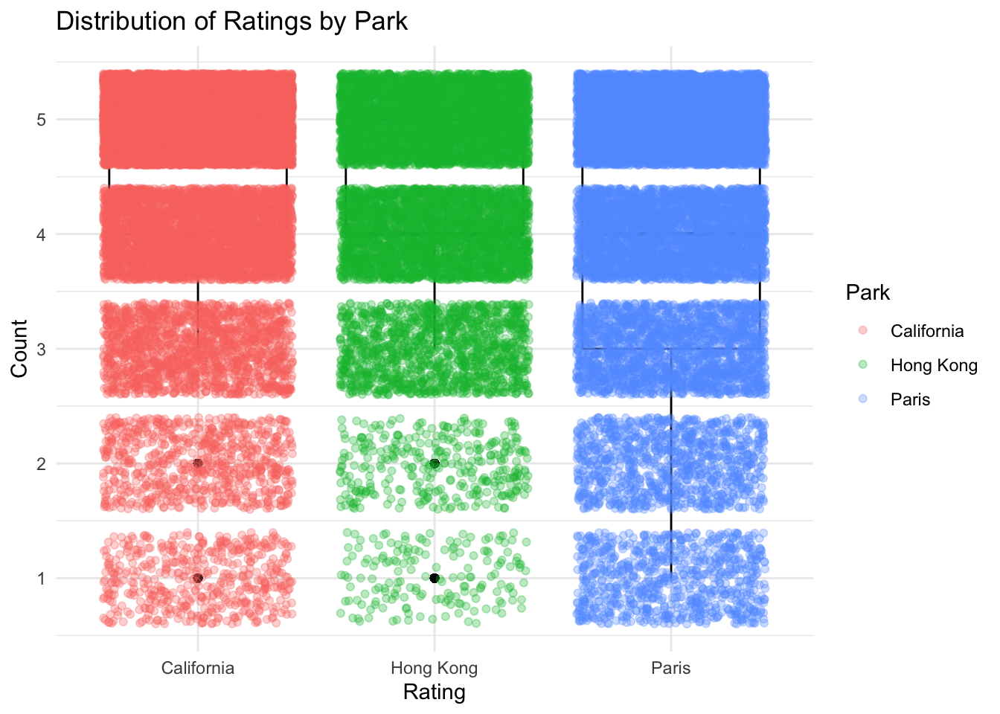
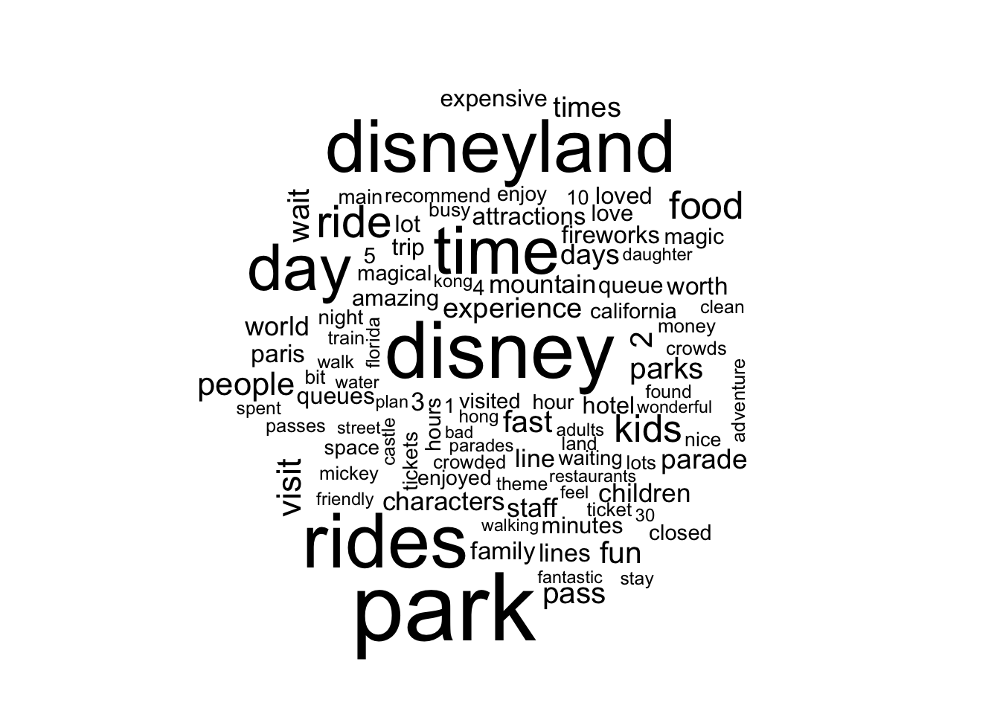
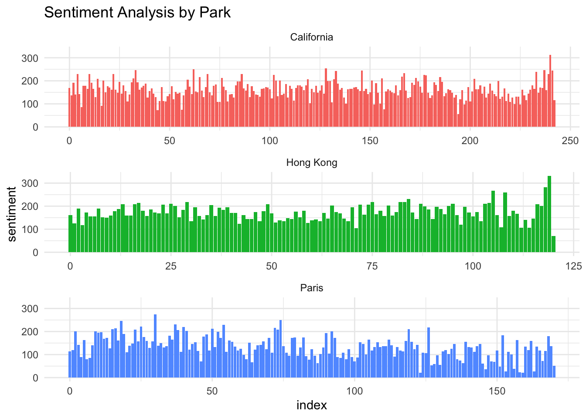

── Attaching core tidyverse packages ──────────────────────── tidyverse 2.0.0 ──
✔ dplyr 1.1.2 ✔ readr 2.1.4
✔ forcats 1.0.0 ✔ stringr 1.5.0
✔ ggplot2 3.4.2 ✔ tibble 3.2.1
✔ lubridate 1.9.2 ✔ tidyr 1.3.0
✔ purrr 1.0.1
── Conflicts ────────────────────────────────────────── tidyverse_conflicts() ──
✖ dplyr::filter() masks stats::filter()
✖ dplyr::lag() masks stats::lag()
ℹ Use the conflicted package (<http://conflicted.r-lib.org/>) to force all conflicts to become errors
Loading required package: RColorBrewer
Rows: 42656 Columns: 6
── Column specification ────────────────────────────────────────────────────────
Delimiter: ","
chr (4): Year_Month, Reviewer_Location, Review_Text, Branch
dbl (2): Review_ID, Rating
ℹ Use `spec()` to retrieve the full column specification for this data.
ℹ Specify the column types or set `show_col_types = FALSE` to quiet this message.Visualize the Data
Distribution of ratings
df |>
ggplot(aes(Rating)) +
geom_bar(fill = "steelblue", color = "black") +
labs(title = "Distribution of Ratings",
x = "Rating",
y = "Count") +
scale_y_continuous(labels = scales::comma) +
theme_minimal()
By park (histogram)
df |>
ggplot(aes(Rating, fill = Park)) +
geom_bar(color = "black") +
labs(title = "Distribution of Ratings by Park",
x = "Rating",
y = "Count",
fill = "Park") +
scale_y_continuous(labels = scales::comma) +
scale_fill_discrete() +
theme_minimal()
By park (box plot)
df |>
ggplot(aes(Park, Rating, color = Park)) +
geom_boxplot(color = "black") +
geom_jitter(alpha = 0.3) +
labs(title = "Distribution of Ratings by Park",
x = "Rating",
y = "Count") +
theme_minimal()
Sample Data
Sample Review
df$Review_Text[15][1] "This place is HUGE! Definately need more than one day. We had 3 children aged 11, 9 & 6 and they loved it. A great variety of rides and attractions for all ages. Food options were fantastic with 3D models of what you were ordering. Staff were fantastic, very helpful. An awesome family experience."Convert it to a tibble
sample <- tibble(line = 1, text = df$Review_Text[15])
sample# A tibble: 1 × 2
line text
<dbl> <chr>
1 1 This place is HUGE! Definately need more than one day. We had 3 childre…Unnest Tokens
tidy_sample <- sample |>
unnest_tokens(word, text)
tidy_sample# A tibble: 53 × 2
line word
<dbl> <chr>
1 1 this
2 1 place
3 1 is
4 1 huge
5 1 definately
6 1 need
7 1 more
8 1 than
9 1 one
10 1 day
# ℹ 43 more rowsWord Count
tidy_sample |>
count(word, sort = TRUE) |>
head()# A tibble: 6 × 2
word n
<chr> <int>
1 were 3
2 and 2
3 fantastic 2
4 of 2
5 11 1
6 3 1Word Count w/o Stop Words
# Word count without stop words
tidy_sample |>
filter(!word %in% stop_words$word) |>
count(word, sort = TRUE) |>
head()# A tibble: 6 × 2
word n
<chr> <int>
1 fantastic 2
2 11 1
3 3 1
4 3d 1
5 6 1
6 9 1Processing the Data
Number Each Review
# Number each review for each park
reviews <- df |>
group_by(Park) |>
mutate(linenumber = row_number()) |>
ungroup() |>
select(Park, linenumber, text = Review_Text) |>
arrange(Park, linenumber)
head(reviews)# A tibble: 6 × 3
Park linenumber text
<chr> <int> <chr>
1 California 1 This place has always been and forever will be special.…
2 California 2 A great day of simple fun and thrills. Bring cash, noth…
3 California 3 All and all a great day was had. The crowds are huge an…
4 California 4 Having been to the Florida location numerous times over…
5 California 5 Had the 4 day pass, spent 3 at DL and one at CA. Great …
6 California 6 Oh my god you can really forget your self and enjoy eve…Unnest Tokens & Remove Stop Words
# Unnest tokens and remove stop words
tidy_reviews <- reviews |>
unnest_tokens(word, text) |>
anti_join(stop_words)Joining with `by = join_by(word)`head(tidy_reviews)# A tibble: 6 × 3
Park linenumber word
<chr> <int> <chr>
1 California 1 forever
2 California 1 special
3 California 1 feeling
4 California 1 entering
5 California 1 park
6 California 1 charactersWord Counts
# Perform word count
tidy_reviews |>
count(word, sort = TRUE) |>
head()# A tibble: 6 × 2
word n
<chr> <int>
1 park 44557
2 disney 36187
3 rides 34508
4 disneyland 32935
5 time 29432
6 day 28332Word Clouds
tidy_reviews |>
anti_join(stop_words) |>
count(word) |>
with(wordcloud(word, n, max.words = 100))Joining with `by = join_by(word)`
N-Grams
- A continuous sequence of
nwords - Can be used ‘as is’, or run through a stemmer to get morphemes
- Offers greater context than single words
Bigrams (prep)
# Unnest into bigrams
tidy_bigrams <- reviews |>
unnest_tokens(bigram, text, token = "ngrams", n = 2) |>
filter(!is.na(bigram))
# Separate words
tidy_bigrams <- tidy_bigrams |>
separate(bigram, c("word1", "word2"), sep = " ")
# Remove stop words
tidy_bigrams <- tidy_bigrams |>
filter(!word1 %in% stop_words$word) |>
filter(!word2 %in% stop_words$word)
# Reunite terms
tidy_bigrams <- tidy_bigrams |>
unite(bigram, word1, word2, sep = " ")Bigrams
tidy_bigrams |>
group_by(Park) |>
count(bigram) |>
arrange(desc(n)) |>
head()# A tibble: 6 × 3
# Groups: Park [3]
Park bigram n
<chr> <chr> <int>
1 California fast pass 3123
2 Hong Kong hong kong 3025
3 Paris disneyland paris 2932
4 California california adventure 2293
5 Paris fast pass 1940
6 California disney world 1926Word & Document Frequencies
Sentiment Analysis
An introduction using the ‘joy’ sentiment.
# Get 'joy' sentiment
nrc_joy <- tidytext::get_sentiments("nrc")
nrc_joy <- nrc_joy |>
filter(sentiment == "joy")
head(nrc_joy)# A tibble: 6 × 2
word sentiment
<chr> <chr>
1 absolution joy
2 abundance joy
3 abundant joy
4 accolade joy
5 accompaniment joy
6 accomplish joy Sentiment Analysis
# Most common 'joy' words in the reviews
tidy_reviews |>
inner_join(nrc_joy) |>
count(word, sort = TRUE) |>
head()Joining with `by = join_by(word)`# A tibble: 6 × 2
word n
<chr> <int>
1 food 14322
2 fun 9952
3 parade 8468
4 love 5967
5 magical 5190
6 enjoy 4807Sentiment Analysis
tidy_reviews_sentiment <- tidy_reviews |>
inner_join(get_sentiments("bing")) |>
count(Park, index = linenumber %/% 80, sentiment) |>
pivot_wider(names_from = sentiment, values_from = n, values_fill = 0) |>
mutate(sentiment = positive - negative)Joining with `by = join_by(word)`Warning in inner_join(tidy_reviews, get_sentiments("bing")): Detected an unexpected many-to-many relationship between `x` and `y`.
ℹ Row 846927 of `x` matches multiple rows in `y`.
ℹ Row 2579 of `y` matches multiple rows in `x`.
ℹ If a many-to-many relationship is expected, set `relationship =
"many-to-many"` to silence this warning.head(tidy_reviews_sentiment)# A tibble: 6 × 5
Park index negative positive sentiment
<chr> <dbl> <int> <int> <int>
1 California 0 144 313 169
2 California 1 174 310 136
3 California 2 149 340 191
4 California 3 143 283 140
5 California 4 170 399 229
6 California 5 123 266 143Sentiment Analysis
ggplot(tidy_reviews_sentiment, aes(index, sentiment, fill = Park)) +
geom_col(show.legend = FALSE) +
facet_wrap(~ Park, ncol = 1, scales = "free_x") +
labs(title = "Sentiment Analysis by Park") +
theme_minimal()